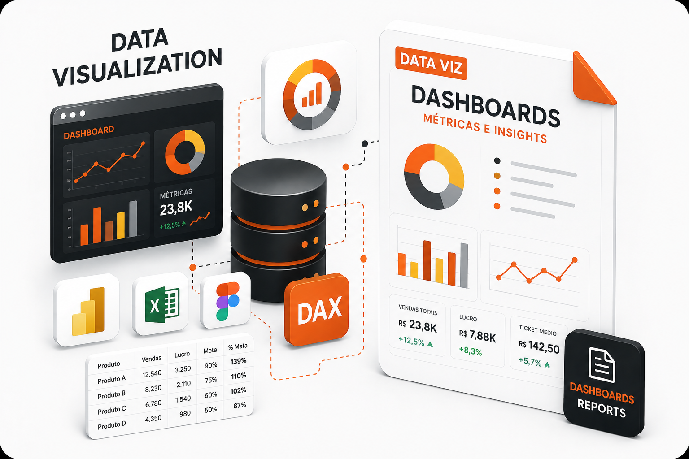
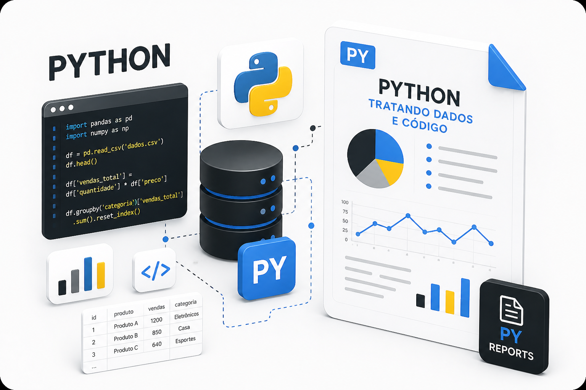
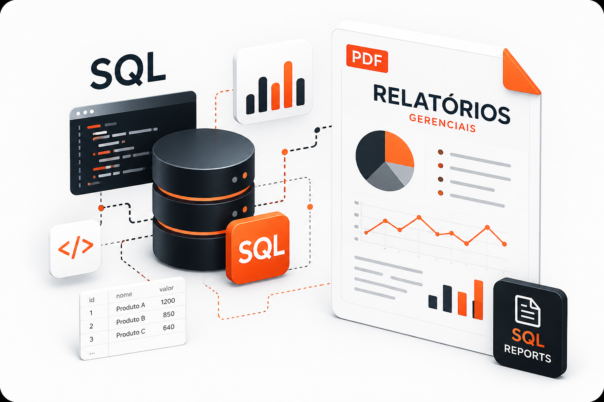

Analista de Dados especializado em dashboards, SQL, Power BI, ETL e visualização estratégica.
Soluções analíticas, Business Intelligence, automações e visualização estratégica de dados.
Desenvolvimento de dashboards interativos com foco em KPIs e storytelling.
Transformação de dados em insights estratégicos para tomada de decisão.
Processamento, automação e manipulação de dados utilizando Python.
Desenvolvimento de consultas SQL, procedures e modelagem de dados.
Extração, transformação e carga de dados para análises estratégicas.
Criação de métricas para acompanhamento operacional e gerencial.
Apenas um rapaz latino-americano aventurando-se no mercado Tech
Sou Analista de Dados com foco em Business Intelligence, SQL, PL/SQL, ETL e desenvolvimento de dashboards estratégicos para apoio à tomada de decisão.
Atuo na construção de soluções analíticas voltadas para indicadores gerenciais, relatórios executivos e visualização de dados, transformando informações operacionais em insights estratégicos para diferentes áreas do negócio.
Tenho experiência em tecnologia desde suporte técnico até análise exploratória de dados, desenvolvendo consultas SQL, automações, modelagem de indicadores e painéis analíticos utilizando Power BI.
Atualmente atuo no segmento hospitalar com o ERP Tasy, trabalhando na análise de dados assistenciais e gerenciais, desenvolvimento de dashboards, relatórios estratégicos, indicadores hospitalares e acompanhamento operacional através de soluções orientadas a dados.
Projetos desenvolvidos com foco em Business Intelligence, Data Analytics, automações e visualização estratégica de dados.

KPIs industriais, produtividade, qualidade e monitoramento operacional.

ETL, tratamento de dados, automações e dashboards analíticos.

Relatórios gerenciais, métricas e análises estratégicas.
YTO NIHON
HASHTAG PROGRAMAÇÃO
CILT - TAGUATINGA
UNIVERSIDADE CATÓLICA DE BRASÍLIA
UNIVERSIDADE ESTÁCIO DE SÁ
ESCOLA TÉCNICA DE CEILÂNDIA
Entre em contato comigo através das plataformas abaixo. Estou disponível para projetos de dashboards, análise de dados, automações e Business Intelligence.